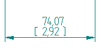
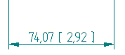

Secondary Units tab (Dimension Style and Dimension Properties)
Sets the secondary units for dimensions and for annotations. Also specifies formatting for secondary units in numeric linear tolerance values.
The Secondary Units tab is available in the Dimension Style dialog box and in the Dimension Properties dialog box.
- Linear
-
Specifies the secondary unit settings for a linear dimension.
- Units
-
Sets the secondary units in drawings with dual unit display. For example, the primary unit can be inches, while the secondary unit can be millimeters. When you place the dimension, it displays both units. The secondary unit is derived by converting the primary unit.
- Round-off
-
Sets the round-off value for secondary units in drawings with dual unit display.
Note:To display fractional dimension round-off, set units to feet, feet-inches, or inches.

- Unit label
-
Sets the secondary units label in drawings with dual unit display.
- Subunit label
-
Sets the secondary subunit label in drawings with dual unit display.
- Fraction separator
-
For fractional dimension values, specifies the characters displayed between the whole number and the fractional part. You can type up to five characters in the Fraction Separator box, including spaces, for example, 15 * 2/3. By default, if this field is left blank, a space is displayed between the whole number and the fraction, for example, 15 2/3.
-
To insert a hyphen between the whole number and the fraction, for example, 15-2/3, place the cursor in the box and type a hyphen, or type an em dash to insert a longer line.
-
To insert a character with spaces on both sides, for example, 15 * 2/3, press Spacebar, type the character, and press Spacebar.
This option does not apply to dimensions with decimal values. Also, previously placed dimensions and annotations are not affected by this setting.
-
- Maximum subunits
-
Sets the maximum subunits used for secondary subunits in drawings with dual unit display.
Maximum subunits typically are used with Feet-Inch units, where Feet are the primary units and Inches are the subunits. Thus, there may be 12 subunits (12 inches) per primary unit (1 foot). However, you can enter a value up to 255.
You can use this option to specify a cutoff value for when a dimension or measurement is displayed in inches and when it is displayed in feet-inches.
-
When the dimension or measurement value is less than the maximum subunits, then the value is displayed in subunits.
-
When the dimension or measurement value exceeds the maximum subunits, both the primary units and the subunits are displayed.
Note:This applies only to the first dimension that exceeds the maximum subunits. After that, the display reverts to ft-in, as if the subunit setting is not used.
-
- Fractional Display Style
-
Specifies the fractional display settings for a linear dimension, in documents using the ANSI (inch) template.
Fractional display options are only available when you select a fractional round-off.
- Stacked
-
Formats the selected fractional value of a linear dimension in stacked format.
Example:
- Skewed
-
Formats the selected fractional value of a linear dimension in skewed format.
Example:
- Linear
-
Formats the selected fractional value of a linear dimension inline with the nominal value. This is the default option.
Example:
- Fraction Size
-
Specifies the percentage of dimension font size to apply to the fraction, from 50% to 100% (the default).
- Linear Tolerance
-
Specifies the secondary unit settings for linear tolerance.
- Units
-
Sets the secondary units for linear tolerance with dual unit display. For example, the primary unit can be inches, while the secondary unit can be millimeters. When you place the dimension, it displays both units. The secondary unit is derived by converting the primary unit.
- Round-off
-
Sets the round-off value for linear tolerance secondary units with dual unit display.
- Unit label
-
Sets the secondary units label for linear tolerance with dual unit display.
- Subunit label
-
Sets the secondary subunit label for linear tolerance with dual unit display.
- Fraction separator
-
For fractional dimension values, specifies the characters displayed between the whole number (the Unit label) and the fractional part (the Subunit label) when both are displayed in the linear tolerance. You can type up to five keyboard characters in the Fraction Separator box, including spaces, for example, 15 * 2/3. By default, if this field is left blank, a space is displayed between the whole number and the fraction, for example, 15 2/3.
This option does not apply to dimensions with decimal values. Also, previously placed dimensions and annotations are not affected by this setting.
- Maximum subunits
-
Sets the maximum subunits used for linear tolerance secondary subunits in drawings with dual unit display.
Maximum subunits typically are used with Feet-Inch units, where Feet are the primary units and Inches are the subunits. Thus, there may be 12 subunits (12 inches) per primary unit (1 foot). However, you can enter a value up to 255.
You can use this option to specify a cutoff value for when linear tolerance is displayed in inches and when it is displayed in feet-inches.
-
When the linear tolerance value is less than the maximum subunits, then the linear tolerance is displayed in subunits.
-
When the linear tolerance value exceeds the maximum subunits, both the primary units and the subunits are displayed.
Note:This applies only to the first dimension that exceeds the maximum subunits. After that, the display reverts to ft-in, as if the subunit setting is not used.
-
- Dual Units
-
- Dual unit display
-
Displays secondary units for dimensions and annotations with dual unit display. For example, the primary unit can be inches, while the secondary unit is millimeters. When you place the dimension, it displays both units. The secondary unit is derived by converting the primary unit.
- Add parentheses ( )
-
Displays parentheses around the secondary unit dimension text. Parentheses comply with ISO standards for secondary units.
- Add brackets [ ]
-
Displays brackets around the secondary unit dimension text. Brackets comply with ANSI standards for secondary units.
- Add nothing
-
Displays neither parentheses nor brackets around the secondary unit dimension text.
- Position
-
Specifies the layout of primary and secondary units when you use dual dimension units.
- Below primary
-
Specifies that the primary and secondary units in a dual unit dimension are displayed vertically, with the secondary units below the primary units.
Example:
- Beside primary
-
Specifies that the primary and secondary units in a dual unit dimension are displayed horizontally, with the secondary units displayed after the primary units.
Example:
You can control the spacing between the primary and secondary units using the Text clearance gap option on the Spacing tab (Dimension Style and Dimension Properties).
- Justification
-
Specifies the horizontal justification of dual dimension units when the primary and secondary units are displayed vertically using the Below primary position.
The horizontal justification options are Left, Center, or Right.
- Delimiter
-
When using dual dimension units, specifies what type of delimiter to display for the secondary units.
- Match primary units
-
When set, specifies that the secondary dimension unit delimiter is the same as that specified for the primary unit. You define primary dimension units on the Units tab.
To use a different delimiter for secondary dimension units, clear the Match Primary Units option and then choose a delimiter from the options below.
- . Period
-
Specifies a period (.) as the secondary unit decimal delimiter.
- , Comma
-
Specifies a comma (,) as the secondary unit decimal delimiter.
- Space
-
Specifies a space ( ) as the secondary unit decimal delimiter.
- Zeros
-
Specifies whether a zero is on the left or right of the decimal in a dimension.
- Leading
-
Places a zero to the left of the decimal point if there are no numbers to the left.
- Trailing
-
Places zeros to the right of the decimal point. The number of zeros placed is based on the active setting for Round-Off. For example, if the dimensional value is .5, and the round-off setting is .1234, the dimensional value appears as .5000.
Note:You can select the Advanced Round-off button
 on the command bar to specify round-off for linear, angular, and tolerance values
in one location, the Round-off dialog box.
on the command bar to specify round-off for linear, angular, and tolerance values
in one location, the Round-off dialog box.
Look up more details
Dimension Properties dialog boxGeneral tab (Dimension Style and Dimension Properties)
Units tab (Dimension Style and Dimension Properties)
Text tab (Dimension Style and Dimension Properties)
Lines and Coordinate tab (Dimension Style and Dimension Properties)
Spacing tab (Dimension Style and Dimension Properties)
Smart Depth tab (Dimension Style, Dimension Properties)
Terminator and Symbol tab (Dimension Style and Dimension Properties)
Annotation tab (Dimension Style and Dimension Properties)
Feature Callout tab